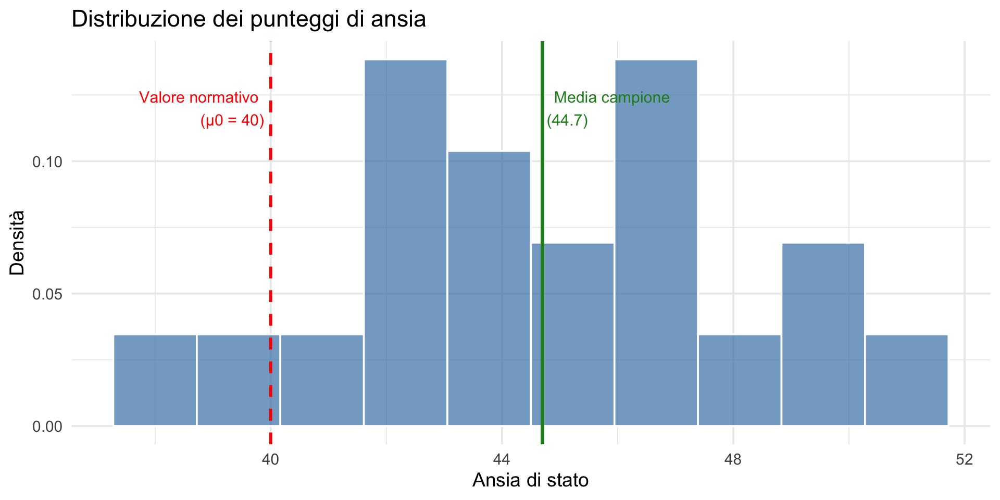
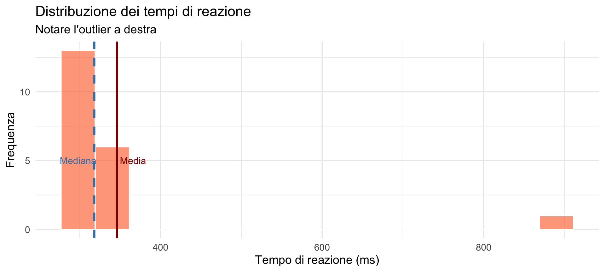
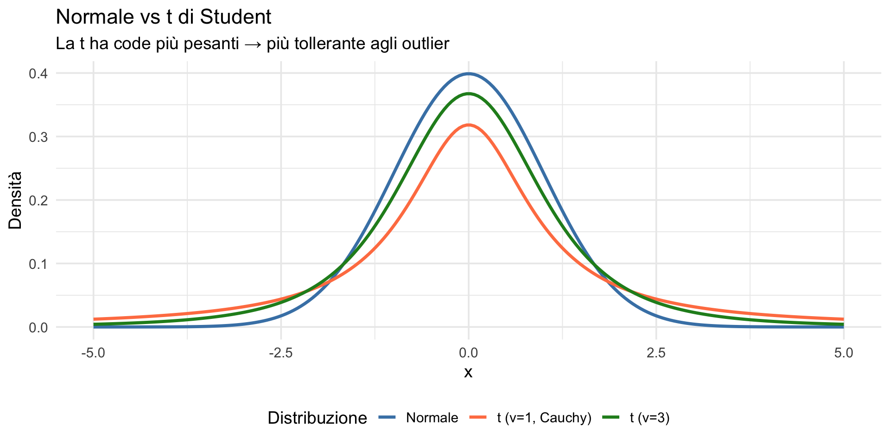
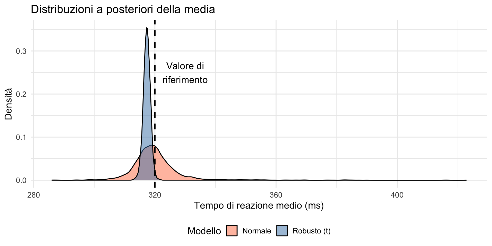

![]()
n = 20 Media = 44.7 SD = 3.44 Stima, incertezza e confronto con l’approccio frequentista — Segmento 1
16 febbraio 2026
Nella Lezione 24 abbiamo introdotto il modello di regressione lineare bayesiano: sonno ~ stress_c. Oggi ci concentriamo sul caso più semplice possibile: il modello a sola intercetta y ~ 1.
Questo modello stima un unico parametro — la media della popolazione — e ci permette di vedere in azione tutti gli strumenti bayesiani che abbiamo costruito finora: prior, posterior, probabilità dirette, confronto cn il frequentismo.
Un ricercatore misura il livello di ansia di stato in un campione di studenti universitari durante la sessione d’esami.
Domanda: Il livello medio di ansia in questa popolazione è diverso dal valore normativo (\(\mu_0\) = 40)?
Questa è forse la domanda più comune in psicologia: confrontare una media con un valore di riferimento.
n = 20 Media = 44.7 SD = 3.44 
L’approccio classico — quello discusso nelle Lezioni 14–16 — usa il test \(t\):
\[ t = \frac{\bar{x} - \mu_0}{s / \sqrt{n}}, \] dove:
Gradi di libertà: 19 p-value: 0 Con p < 0.05, l’approccio frequentista conclude: “rifiutiamo \(H_0\)”.
L’interpretazione frequentista:
“Se la vera media fosse 40, la probabilità di osservare una differenza così estrema (o più estrema) è inferiore a 0.00000698.”
Ma attenzione: come abbiamo visto nella Lezione 15, questo NON dice:
Immaginiamo di misurare il tempo di reazione (in ms) in un compito cognitivo.
Media: 346 msMediana: 318 msNotiamo qualcosa di strano?

Poniamoci il problema di stabilire se la media della popolazione abbia un valore minore di 320.
Questo testa formalmente:
Con \(p\) = 0.8122, il ricercatore conclude:
“Il tempo di reazione medio non è significativamente minore di 320 ms.”
Ma è corretto?
L’outlier (890 ms) ha gonfiato la media e introdotto una distorsione nel risultato del test.
One Sample t-test
data: tempi_puliti
t = -2.3296, df = 18, p-value = 0.01584
alternative hypothesis: true mean is less than 320
95 percent confidence interval:
-Inf 319.3273
sample estimates:
mean of x
317.3684 Ora \(p\) = 0.0158 → risultato significativo.
L’approccio frequentista richiede:
Tutte queste sono decisioni arbitrarie che influenzano il risultato — si ricordino il problema dei gradi di libertà del ricercatore e la crisi della replicabilità discussi nelle Lezioni 15–16.
Invece di “correggere” i dati, possiamo usare un modello più flessibile.
L’idea: sostituire la distribuzione normale con la distribuzione \(t\) di Student, che ha code più pesanti.
\[ y_i \sim \text{Student-}t(\nu, \mu, \sigma), \] dove \(\nu\) (gradi di libertà) controlla quanto le code sono “pesanti”.

Nella Lezione 24 abbiamo usato brms per la regressione sonno ~ stress_c. Qui il modello è più semplice — solo l’intercetta — ma cambiamo la famiglia della distribuzione:
Family: gaussian
Links: mu = identity
Formula: tempo ~ 1
Data: dati_tempi (Number of observations: 20)
Draws: 4 chains, each with iter = 2000; warmup = 1000; thin = 1;
total post-warmup draws = 4000
Regression Coefficients:
Estimate Est.Error l-95% CI u-95% CI Rhat Bulk_ESS Tail_ESS
Intercept 319.87 8.04 308.21 335.50 1.00 1928 938
Further Distributional Parameters:
Estimate Est.Error l-95% CI u-95% CI Rhat Bulk_ESS Tail_ESS
sigma 124.23 20.23 93.13 170.25 1.00 1671 1731
Draws were sampled using sample(hmc). For each parameter, Bulk_ESS
and Tail_ESS are effective sample size measures, and Rhat is the potential
scale reduction factor on split chains (at convergence, Rhat = 1). Family: student
Links: mu = identity
Formula: tempo ~ 1
Data: dati_tempi (Number of observations: 20)
Draws: 4 chains, each with iter = 2000; warmup = 1000; thin = 1;
total post-warmup draws = 4000
Regression Coefficients:
Estimate Est.Error l-95% CI u-95% CI Rhat Bulk_ESS Tail_ESS
Intercept 317.31 1.15 314.94 319.57 1.00 2693 2109
Further Distributional Parameters:
Estimate Est.Error l-95% CI u-95% CI Rhat Bulk_ESS Tail_ESS
sigma 3.93 1.07 2.17 6.34 1.00 2401 2373
nu 1.54 0.43 1.02 2.65 1.00 1763 971
Draws were sampled using sample(hmc). For each parameter, Bulk_ESS
and Tail_ESS are effective sample size measures, and Rhat is the potential
scale reduction factor on split chains (at convergence, Rhat = 1).Stima della media: Modello normale: 319.9 ms Modello robusto: 317.3 ms Media senza outlier: 317.4 ms Valore di riferimento: 320 msIl modello robusto automaticamente riduce l’influenza dell’outlier.

Possiamo rispondere direttamente alla domanda di ricerca — proprio come nella Lezione 20:
P(μ > 320 ms): Modello normale: 42.4 % Modello robusto: 1.2 %Filosofia:
Problemi:
Filosofia:
Vantaggi:
| Problema | Soluzione frequentista | Problema della soluzione |
|---|---|---|
| Outlier | Rimozione | Quale criterio? |
| Non normalità | Trasformazione | Quale trasformazione? |
| Eteroschedasticità | Test robusti | Perdita di potenza |
| Dipendenza | Correzioni | Assunzioni aggiuntive |
Ogni correzione introduce nuove assunzioni e decisioni arbitrarie.
Invece di “correggere”, modelliamo il fenomeno:
Tutto dentro un unico framework coerente — lo stesso framework brms che abbiamo usato nella Lezione 24 per la regressione.
Il test \(t\) assume la normalità e può essere ingannato dagli outlier.
L’approccio frequentista richiede correzioni ad hoc.
L’approccio bayesiano permette modelli naturalmente robusti.
La distribuzione \(t\) di Student è più tollerante ai valori estremi.
Dobbiamo sempre guardare i dati prima di qualsiasi analisi.
“Non correggere i dati per adattarli al modello. Scegli un modello che si adatti ai dati.”
L’approccio bayesiano ci permette di costruire modelli più realistici, senza dover prendere decisioni arbitrarie su cosa fare con i dati “problematici”.
Abbiamo visto come stimare una media in modo robusto.
Ma c’è un problema più profondo:
quando stimiamo una media, stiamo descrivendo cosa succede “in media” nel gruppo.
Ma cosa succede al singolo individuo?
Nel prossimo segmento vedremo perché questa distinzione è cruciale per la psicologia clinica — e come la distribuzione predittiva (Lezione 23) ci aiuta a rispondere a questa domanda.